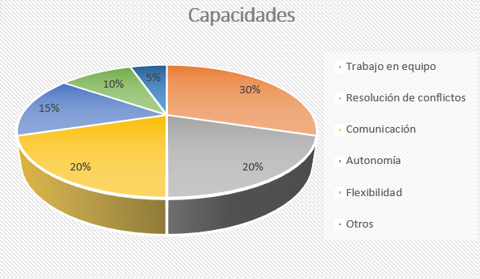
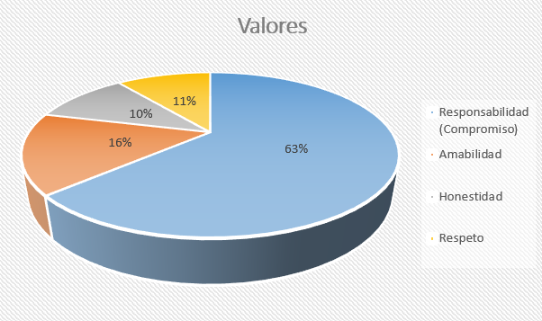
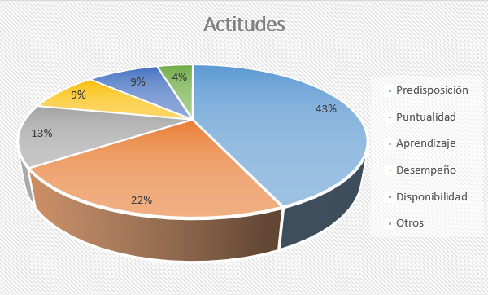
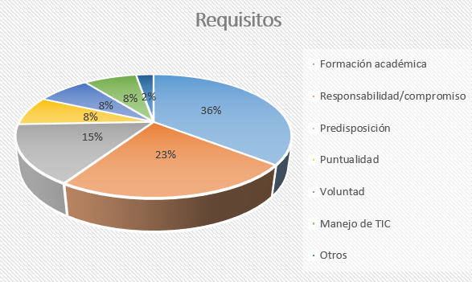
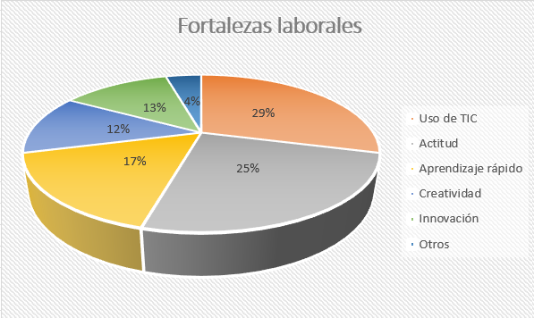
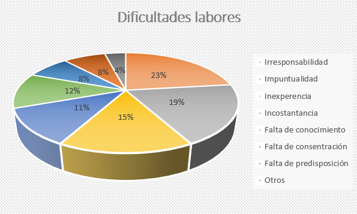
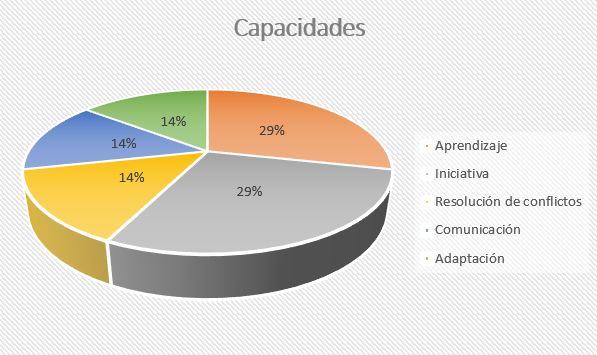
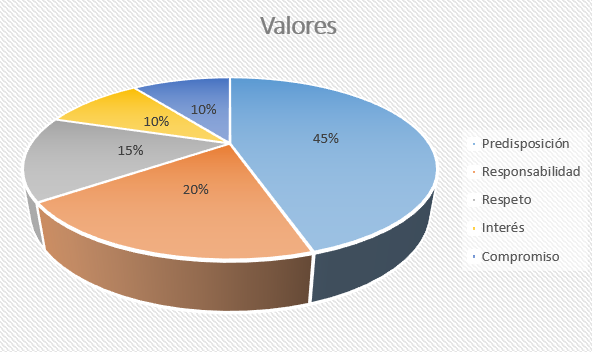
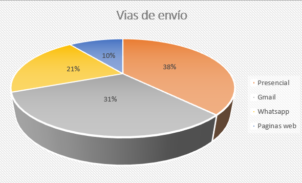
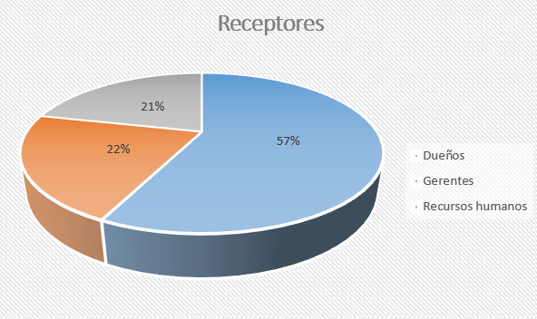

¿Cómo realizamos la investigación?
Este proyecto se desarrolló a partir de una investigación de campo centrada en el contexto laboral local.
En primer lugar, seleccionamos empresas, comercios e instituciones de nuestra comunidad que habitualmente incorporan personal o participan en procesos de selección de nuevos trabajadores. El objetivo fue conocer la mirada de quienes tienen experiencia directa en la contratación de jóvenes y comprender cuáles son las características que actualmente se consideran más importantes para desempeñarse en un empleo.
Para obtener esta información elaboramos una entrevista semiestructurada, compuesta por preguntas abiertas que permitieron a cada entrevistado compartir su experiencia y expresar libremente sus opiniones.
Una vez finalizadas las entrevistas, organizamos toda la información recopilada y analizamos las respuestas para identificar los aspectos que se repetían con mayor frecuencia. Posteriormente clasificamos los datos en distintas categorías, lo que permitió elaborar gráficos, comparar resultados y obtener conclusiones sobre las principales demandas del mercado laboral en nuestra localidad.
Este proceso no solo nos permitió conocer mejor la realidad del mundo del trabajo, sino también desarrollar habilidades de investigación, análisis de información, comunicación y trabajo colaborativo. Además, fortaleció el vínculo entre la escuela y las organizaciones de la comunidad, generando un espacio de diálogo que acerca la formación de los estudiantes a las necesidades reales del ámbito laboral. A continuación les mostraremos las preguntas realizadas y los resultados que obtuvimos
¿QUÉ CAPACIDADES Y ACTITUDES LABORALES SON ACTUALMENTE VALORADAS POR SU EMPRESA O INSTITUCIÓN?



¿QUÉ REQUISITOS FORMAN PARFTE ELEMENTAQL AL CONTRATAR A ALGUIEN HOY?

¿QUÉ FORTALEZAS LABORALES ENCUENTRAN HOY EN LOS JÓVENES?

¿QUÉ DIFICULTADES LABORALES PRESENTAN LOS JÓVENES HOY

IMAGINE QUE SU EMPRESA O INSTITUCIÓN INGRESARÁ UN JOVEN. ¿CUÁL SERÍA LA CAPACIDAD Y VALOR QUE PRIORIZARÍA AL MOMENTO DE LA SELECCIÓN?


¿QUIÉN ES EL PERSONAL RESPONSABLE DENTRO DE LA FIRMA DE RECEPTAR LOS CURRÍCULUM VITAE Y CUÁLES SON LAS VÍAS DE ENVÍO?

